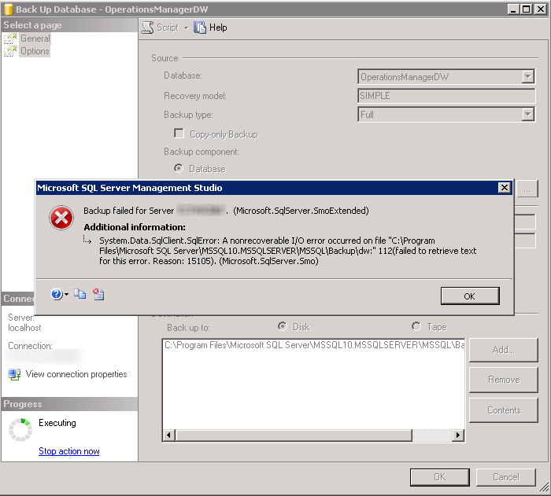

Backup failed–nonrecoverable I/O error occurred OperationsManagerDW
Page content
I was recently sent this error by a customer who was trying to backup their Operations Manager 2012 Data warehouse database.

I did some initial troubleshooting and found out that the database was around 130GB in size and the destination didn’t have sufficient space for the backup. I tried with an alterative location with more storage space, and I was able to successfully backup the database.
I would also recommend looking at database grooming settings for Operations Manager data warehouse, as this database could be large in size with time. Refer below url for technet reference relating to Operations Manager data warehouse grooming.